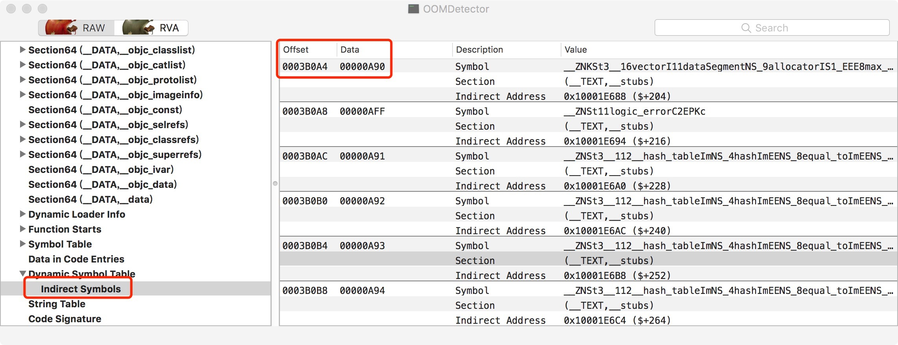
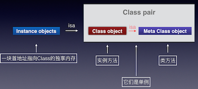

Fishhook-源码分析
Fishhook-源码分析
看腾讯开源的iOS内存监控组件OOMDetector的过程中，发现其内部使用了Facebook开源的fishhook。遂跟着研究了一下这个库。
fishhook可以在模拟器和设备上的iOS上运行的Mach-O二进制文件中动态重新绑定符号，可以交换C的函数。
fishhook代码量不多，一共就两个文件fishhook.h和fishhook.c。其中.c文件只有200多行，整体所以看起来不是很复杂的，不过其中涉及到了 Mach-O 和函数指针相关的知识，想看懂这些代码还是需要一些基础的。
先看一下调用流程。
调用流程
int rebind_symbols_image(void *header,
intptr_t slide,
struct rebinding rebindings[],
size_t rebindings_nel);
int rebind_symbols(struct rebinding rebindings[], size_t rebindings_nel);
这两个函数是暴漏在.h，给用户调用的，其内部都是直接或者间接调用了
static void rebind_symbols_for_image(struct rebindings_entry *rebindings,
const struct mach_header *header,
intptr_t slide);
接着最终调用
static void perform_rebinding_with_section(struct rebindings_entry *rebindings,
section_t *section,
intptr_t slide,
nlist_t *symtab,
char *strtab,
uint32_t *indirect_symtab);
大概流程就是这样了，其中在perform_rebinding_with_section函数中这段代码是交换函数的地方
if (cur->rebindings[j].replaced != NULL &&
indirect_symbol_bindings[i] != cur->rebindings[j].replacement) {
*(cur->rebindings[j].replaced) = indirect_symbol_bindings[i];
}
indirect_symbol_bindings[i] = cur->rebindings[j].replacement;
实例应用（OOMDetector中替换malloc等函数）
此实例是OOMDetector使用fishhook替换malloc函数。
下面的替换malloc等函数的入口函数hookMalloc，该函数调用了OOMDetector的rebind_symbols_for_imagename函数。
void hookMalloc()
{
if(!isPaused){
beSureAllRebindingFuncBeenCalled();
orig_malloc = malloc;
orig_calloc = calloc;
orig_valloc = valloc;
orig_realloc = realloc;
orig_block_copy = _Block_copy;
rebind_symbols_for_imagename(
(struct rebinding[5]){
{"realloc",(void*)new_realloc,(void**)&orig_realloc},
{"malloc", (void*)new_malloc, (void **)&orig_malloc},
{"valloc",(void*)new_valloc,(void**)&orig_valloc},
{"calloc",(void*)new_calloc,(void**)&orig_calloc},
{"_Block_copy",(void*)new_block_copy,(void**)&orig_block_copy}},
5,
getImagename());
}
else{
isPaused = false;
}
}
hookMalloc替换了realloc、malloc、valloc、calloc、_Block_copy这几个函数。
下面是新的new_malloc函数定义：
static void* (*orig_malloc)(size_t);
static void* (*orig_calloc)(size_t, size_t);
static void* (*orig_realloc)(void *, size_t);
static void* (*orig_valloc)(size_t);
static void* (*orig_block_copy)(const void *aBlock);
下面是rebind_symbols_for_imagename第三个入参————镜像名称的获取方式：
const char *getImagename()
{
const char* name = _dyld_get_image_name(0);
const char* tmp = strrchr(name, '/');
if (tmp) {
name = tmp + 1;
}
return name;
}
调用了<mach-o/dyld.h> 头文件中的_dyld_get_image_name函数。 _dyld_get_image_name 根据镜像的索引，获取镜像的名称。strrchr函数是反向查找第一个给定字符。返回第一次匹配到的地址指针。
rebind_symbols_for_imagename函数是调用了fishhook中的rebind_symbols_image函数实现了函数的交换。
void rebind_symbols_for_imagename(struct rebinding rebindings[],
size_t rebindings_nel,
const char *imagename)
{
uint32_t count = _dyld_image_count();
for (uint32_t i = 0; i < count; i++) {
const mach_header_t* header = (const mach_header_t*)_dyld_get_image_header(i);
const char* name = _dyld_get_image_name(i);
const char* tmp = strrchr(name, '/');
long slide = _dyld_get_image_vmaddr_slide(i);
if (tmp) {
name = tmp + 1;
}
if(strcmp(name,imagename) == 0){
rebind_symbols_image((void *)header,
slide,
rebindings,
rebindings_nel);
break;
}
}
}
rebindings承载重新绑定的所有信息，rebindings_nel是rebindings的个数，imagename要替换函数指针镜像名称，也就是只替换名称为imagename文件中的函数指针，其他库不做替换。
_dyld_get_image_header 获取镜像的header头，_dyld_get_image_vmaddr_slide获取镜像的随机启动地址。rebind_symbols_image函数为重新绑定做准备，增加了两个参数，header、slide。header就是加载到内存的中二进制文件的头。slide 的是ALSR技术中的随机启动地址。这个地址的含义可以参考iOS crash reports: atos not working as expected、 iOS crash log 解析 symbol address = stack address - slide 运行时获取slide的api 利用dwarfdump从dsym文件中得到symbol 。
关于ALSR
下面为了理解ALSR中的slide，贴出一段测试代码：
void understandALSR()
{
///枚举所有镜像
for (int i = 0; i < _dyld_image_count(); i++)
{
char *image_name = (char *)_dyld_get_image_name(i);
const struct mach_header *mh = _dyld_get_image_header(i);
intptr_t vmaddr_slide = _dyld_get_image_vmaddr_slide(i);
printf("Image name %s ,image header 0x%llx , ASLR slide 0x%lx.\n",
image_name, (mach_vm_address_t)mh, vmaddr_slide);
}
}
输出如下：
Image name /Applications/Xcode.app/Contents/Developer/Platforms/iPhoneOS.platform/Developer/Library/CoreSimulator/Profiles/Runtimes/iOS.simruntime/Contents/Resources/RuntimeRoot/usr/lib/dyld_sim ,image header 0x107ca6000 , ASLR slide 0x107ca6000.
Image name /Users/ankang/Library/Developer/CoreSimulator/Devices/C9991234-7FA4-4F9E-9C73-629AFC886DC1/data/Containers/Bundle/Application/5C4118B1-2236-4A9C-B0A3-0DF77D765054/LearnMachO.app/LearnMachO ,image header 0x107c9c000 , ASLR slide 0x7c9c000.
代码对应的二进制文件中的加载地址（链接时load address）示意图：

结合上面的示例代码和二进制内容图片，可以诠释下面的公式：
slide = (运行时)load address - (链接时)load address;
symble address ＝ stack address - slide；
其中：
- stack address ： 程序运行时线程栈中所有函数调用的地址。
- symble address ： dsym文件中函数符号对应的地址，用此地址在dsym文件中可以查出对应的符号信息。
可以看出，没有ASLR时：
symble address = stack address
源码分析
fishhook代码这么少，所以可以进行一次全面的分析了。
首先，fishhook定义了一个结构体，存储绑定的数据。定义如下：
/*
* A structure representing a particular intended rebinding from a symbol
* name to its replacement
*/
struct rebinding {
const char *name; ` //替换的函数名字
void *replacement; //替换后的函数指针
void **replaced; //原始的方法
};
接着看rebind_symbols_image函数：
int rebind_symbols_image(void *header,
intptr_t slide,
struct rebinding rebindings[],
size_t rebindings_nel) {
struct rebindings_entry *rebindings_head = NULL;
int retval = prepend_rebindings(&rebindings_head, rebindings, rebindings_nel);
rebind_symbols_for_image(rebindings_head, (const struct mach_header *) header, slide);
if (rebindings_head) {
free(rebindings_head->rebindings);
}
free(rebindings_head);
return retval;
}
rebind_symbols_image 主要工作是通过prepend_rebindings构造绑定的结构体struct rebindings_entry，定义如下：
struct rebindings_entry {
struct rebinding *rebindings;
size_t rebindings_nel;
struct rebindings_entry *next;
};
static int prepend_rebindings(struct rebindings_entry **rebindings_head,
struct rebinding rebindings[],
size_t nel) {
// 申请new_entry地址
struct rebindings_entry *new_entry = (struct rebindings_entry *) malloc(sizeof(struct rebindings_entry));
if (!new_entry) {
return -1;
}
// 给new_entry->rebindings分配内存
new_entry->rebindings = (struct rebinding *) malloc(sizeof(struct rebinding) * nel);
if (!new_entry->rebindings) {
free(new_entry);
return -1;
}
// 拷贝重新绑定信息到new_entry->rebindings
memcpy(new_entry->rebindings, rebindings, sizeof(struct rebinding) * nel);
new_entry->rebindings_nel = nel;
new_entry->next = *rebindings_head;
// 这个将创建的new_entry赋值给rebindings_head，通过二级指针返回给调用者
*rebindings_head = new_entry;
return 0;
}
prepend_rebindings只是将绑定的struct rebinding类型参数转化为struct rebindings_entry结构，这种结构类似链表，可以方便的管理多个struct rebinding结构。下面看rebind_symbols_for_image：
static void rebind_symbols_for_image(struct rebindings_entry *rebindings,
const struct mach_header *header,
intptr_t slide) {
Dl_info info;
// find the image containing a given address
// 验证库是否存在
if (dladdr(header, &info) == 0) {
return;
}
segment_command_t *cur_seg_cmd;
// SEG_LINKEDIT commond指针
segment_command_t *linkedit_segment = NULL;
// LC_SYMTAB commond指针
struct symtab_command* symtab_cmd = NULL;
// LC_DYSYMTAB commond指针
struct dysymtab_command* dysymtab_cmd = NULL;
// 定位linkedit_segment、symtab_cmd、dysymtab_cmd三指针
uintptr_t cur = (uintptr_t)header + sizeof(mach_header_t);
for (uint i = 0; i < header->ncmds; i++, cur += cur_seg_cmd->cmdsize)
{
cur_seg_cmd = (segment_command_t *)cur;
if (cur_seg_cmd->cmd == LC_SEGMENT_ARCH_DEPENDENT)
{
if (strcmp(cur_seg_cmd->segname, SEG_LINKEDIT) == 0)
{
linkedit_segment = cur_seg_cmd;
}
}
else if (cur_seg_cmd->cmd == LC_SYMTAB)
{
symtab_cmd = (struct symtab_command*)cur_seg_cmd;
}
else if (cur_seg_cmd->cmd == LC_DYSYMTAB)
{
dysymtab_cmd = (struct dysymtab_command*)cur_seg_cmd;
}
}
if (!symtab_cmd || !dysymtab_cmd || !linkedit_segment ||
!dysymtab_cmd->nindirectsyms) {
return;
}
// Find base symbol/string table addresses 查找符号表和string表
uintptr_t linkedit_base = (uintptr_t)slide + linkedit_segment->vmaddr - linkedit_segment->fileoff;
nlist_t *symtab = (nlist_t *)(linkedit_base + symtab_cmd->symoff);
char *strtab = (char *)(linkedit_base + symtab_cmd->stroff);
// Get indirect symbol table (array of uint32_t indices into symbol table)
uint32_t *indirect_symtab = (uint32_t *)(linkedit_base + dysymtab_cmd->indirectsymoff);
cur = (uintptr_t)header + sizeof(mach_header_t);
for (uint i = 0; i < header->ncmds; i++, cur += cur_seg_cmd->cmdsize)
{
cur_seg_cmd = (segment_command_t *)cur;
if (cur_seg_cmd->cmd == LC_SEGMENT_ARCH_DEPENDENT)
{
if (strcmp(cur_seg_cmd->segname, SEG_DATA) != 0 &&
strcmp(cur_seg_cmd->segname, SEG_DATA_CONST) != 0) {
continue;
}
// 找到类型为S_LAZY_SYMBOL_POINTERS、S_NON_LAZY_SYMBOL_POINTERS类型的section
for (uint j = 0; j < cur_seg_cmd->nsects; j++) {
section_t *sect =
(section_t *)(cur + sizeof(segment_command_t)) + j;
if ((sect->flags & SECTION_TYPE) == S_LAZY_SYMBOL_POINTERS) {
perform_rebinding_with_section(rebindings, sect, slide, symtab, strtab, indirect_symtab);
}
if ((sect->flags & SECTION_TYPE) == S_NON_LAZY_SYMBOL_POINTERS) {
perform_rebinding_with_section(rebindings, sect, slide, symtab, strtab, indirect_symtab);
}
}
}
}
}
rebind_symbols_for_image 函数主要定位到三表，类型为S_LAZY_SYMBOL_POINTERS、S_NON_LAZY_SYMBOL_POINTERS类型的section。然后调用perform_rebinding_with_section 函数。其中部分宏定义如下。
#define LC_SEGMENT_ARCH_DEPENDENT LC_SEGMENT_64
#define SEG_LINKEDIT "__LINKEDIT"
#define S_NON_LAZY_SYMBOL_POINTERS 0x6 /* section with only non-lazy symbol pointers */
#define S_LAZY_SYMBOL_POINTERS 0x7 /* section with only lazy symbol
上面的宏定义于<mach-o/loader.h>文件中，位于477行。 在S_NON_LAZY_SYMBOL_POINTERS宏的上面有一段注释。这段注释非常的关键。说明了S_NON_LAZY_SYMBOL_POINTERS类型的section中的数据和动态符号表中的符号是顺序对应的。只有理解了这段内容。才能真正的理解fishhook。
For the two types of symbol pointers sections and the symbol stubs section they have indirect symbol table entries.
对于存储符号指针、符号存根两种类型的section，它们有间接符号表条目。
For each of the entries in the section,the indirect symbol table entries, in corresponding order in the indirect symbol table, start at the index stored in the reserved1 field of the section structure.
间接符号表条目顺序对应section中的条目，对应从section的reserved1索引开始。
Since the indirect symbol table entries correspond to the entries in the section the number of indirect symbol table entries is inferred from the size of the section divided by the size of the entries in the section. For symbol pointers sections the size of the entries in the section is 4 bytes (看结构是8bytes，可能是64位的缘故)
由于间接符号表条目对应于section中的条目，因此间接符号表条目的数量由section的大小除以section中的条目的大小来推断。对于符号指针节，section中的条目的大小是4个字节
下面是perform_rebinding_with_section函数源码：
static void perform_rebinding_with_section(struct rebindings_entry *rebindings,
section_t *section, // section
intptr_t slide, // 基址
nlist_t *symtab, // 符号表
char *strtab, // sting 表
uint32_t *indirect_symtab // 动态符号表
)
{
// 动态符号表 对应section的地址，动态符号表的基地址+section对应的偏移量
uint32_t *indirect_symbol_indices = indirect_symtab + section->reserved1;
// section加载到内存的虚拟地址（是要替换这里面的东西）
void **indirect_symbol_bindings = (void **)((uintptr_t)slide + section->addr);
// section中替换函数指针
for (uint i = 0; i < section->size / sizeof(void *); i++)
{
// 由于section中条目和动态符号表中的条目对应，所以将section中的条目索引i用于动态符号表。
// 下面目的是获取section中存储的函数指针的符号 动态符号表-> 符号表-> string表
// indirect_symbol_indices[i]中存储符号表的索引。symtab_index就是符号表的索引
uint32_t symtab_index = indirect_symbol_indices[i];
if (symtab_index == INDIRECT_SYMBOL_ABS ||
symtab_index == INDIRECT_SYMBOL_LOCAL ||
symtab_index == (INDIRECT_SYMBOL_LOCAL |
INDIRECT_SYMBOL_ABS))
{
continue;
}
// 通过nlist_t的n_strx找到String表的偏移地址，strtab_offset。
uint32_t strtab_offset = symtab[symtab_index].n_un.n_strx;
char *symbol_name = strtab + strtab_offset;
if (strnlen(symbol_name, 2) < 2)
{
continue;
}
///依次枚举struct rebindings_entry 结构，判断时候有和当前函数指针相等的带替换的函数。
struct rebindings_entry *cur = rebindings;
while (cur)
{
for (uint j = 0; j < cur->rebindings_nel; j++)
{
///如果符号名称和替换的名称一样，进行替换
if (strcmp(&symbol_name[1], cur->rebindings[j].name) == 0)
{
if (cur->rebindings[j].replaced != NULL &&
indirect_symbol_bindings[i] != cur->rebindings[j].replacement)
{
///保存原始的指针地址，只保存一次
*(cur->rebindings[j].replaced) = indirect_symbol_bindings[i];
}
///在section中替换。将indirect_symbol_bindings[i]中存储的函数指针地址进行替换。
indirect_symbol_bindings[i] = cur->rebindings[j].replacement;
goto symbol_loop;
}
}
cur = cur->next;
}
symbol_loop:;
}
}
perform_rebinding_with_section函数完成替换的关键函数。 将section中的函数指针替换为新的函数指针。
图解fishhook
同事画的9张图片解释fishhook原理，看代码懵逼的可以看看图，有助于理解

图1. load command中_DATA segement中__la_symbol_ptr section结构图,说明该section和动态符号表对应的起始索引是146

图2.数据区域中__la_symbol_ptr的结构,可以看出该section的起始地址是0x00240B0，图2和图3是为了找malloc函数指针的位置

图3.数据区域中__la_symbol_ptr的结构, 偏移了一定的位置。文件0x000242B0地址出存储的是malloc函数指针。
计算偏移数量的方法：0x242B0 - 0x240B0 = 0x200
每个条目占用8个字节0x200/0x8 = 0x40 = 64
得出：在符号表中，malloc偏移64个条目

图4 .转到数据区域中动态符号表的起始位置处，该图说明动态符号表的起始地址是0x3B0A4

图5 。 计算la_symbol_ptr 对应的符号在动态符号表中的位置： 0x3B060 + 146*4 = 0x3B060 + 0x248 = 0x3B2A8，地址0x0003B2A8处后面的符号和la_symbol_ptr中的条目对应。
图6 . 查找64个偏移后的动态符号表的地址：0x3B2A8 + 0x40*x4 = 0x3B3A8，地址0x3B3A8中存储的值是符号表中的索引，
为0xb32。由于machoviewer看不到符号表，所以用代码查看符号表中索引为0xB32 的符号信息。
查看代码：struct nlist_64 const * mallocNlist =[self getSymbol64ByIndex:0xB32];
图7 .代码查看符号表示意图。符号表的索引为0xB32的符号的信息。可以看出n_strx的值是0x2B07，
这个值指的是string表中的偏移量

图8 .string 表，string表的起始地址是0x3B498

图9 .string 表， 偏移0x2B07 后的结果—— 0x3B498 + 0x2B07 = 0x3DF9F， 这个地址存储的字符串就是图3中
地址为0x10001ef10的函数指针的名称，名称是malloc。这个名称和我么要替换的名称一致，所以替换图3中的
0x10001ef10，替换成新指定函数指针地址。实现替换。
UIButton扩大点击范围以及关于响应者链条的思考
平时开发遇到一个比较蛋疼的情景就是，设计给的按钮是40x40pt的，但是UE又觉得按钮太小，总是点不准，想要增大点击范围，这个要求合理合法，开发没有任何拒绝的理由。那就把按钮弄大吧，然后各种计算frame，按钮可能还有边框渐变色什么的，还得更复杂的处理一番，折腾下来身心俱疲。
程序员这么懒的人怎么可能做这种又low又类的工作呢，所以肯定是有解决方法的，一顿搜索后，发现智慧就是这么简单，想要扩大UIButton的响应区域，让用户在点击UIButton以外的范围的时候也可以响应按钮的触发事件，只需要重写UIButton的对象方法-(BOOL)pointInside:(CGPoint)point withEvent:(UIEvent *)event;，然后只要点击在在想要响应按钮事件的范围内，返回YES即可。下面提供一个分类方法，直接设置hitEdgeInsets属性即可实现扩大响应范围。
#import <UIKit/UIKit.h>
@interface UIButton (HitRect)
/**
自定义响应边界 UIEdgeInsetsMake(-3, -4, -5, -6). 表示扩大
例如： self.btn.hitEdgeInsets = UIEdgeInsetsMake(-3, -4, -5, -6);
*/
@property(nonatomic, assign) UIEdgeInsets hitEdgeInsets;
@end
#import "UIButton+HitRect.h"
#import <objc/runtime.h>
@implementation UIButton (HitRect)
#pragma mark - set Method
- (void)setHitEdgeInsets:(UIEdgeInsets)hitEdgeInsets {
NSValue *value = [NSValue value:&hitEdgeInsets withObjCType:@encode(UIEdgeInsets)];
objc_setAssociatedObject(self,kHitEdgeInsets, value, OBJC_ASSOCIATION_RETAIN_NONATOMIC);
}
#pragma mark - get Method
- (UIEdgeInsets)hitEdgeInsets {
NSValue *value = objc_getAssociatedObject(self, kHitEdgeInsets);
UIEdgeInsets edgeInsets;
[value getValue:&edgeInsets];
return value ? edgeInsets:UIEdgeInsetsZero;
}
#pragma mark - override super method
- (BOOL)pointInside:(CGPoint)point withEvent:(UIEvent *)event {
//如果 button 边界值无变化 失效 隐藏 或者透明 直接返回
if (UIEdgeInsetsEqualToEdgeInsets(self.hitEdgeInsets, UIEdgeInsetsZero) || !self.enabled || self.hidden || self.alpha == 0 ) {
return [super pointInside:point withEvent:event];
} else {
CGRect relativeFrame = self.bounds;
CGRect hitFrame = UIEdgeInsetsInsetRect(relativeFrame, self.hitEdgeInsets);
return CGRectContainsPoint(hitFrame, point);
}
}
@end
响应事件流程分析
一个UIButton上加上一个UIView，点击UIView的时候能响应UIButton的响应事件吗？
这个是有前提条件的，UIView有一个属性userInteractionEnabled，其他的继承UIView的控件也有这个属性，这个属性的意思就是当前视图是否支持交互，默认UIView的userInteractionEnabled是YES，所以是可交互的，当挡住UIButton的时候，UIView就不响应事件了。相对应的，UIImageView和UILabel默认是NO，所以如果不改这个属性的话，这两个控件是挡不住UIButton的。
还有一个引申的问题，如果在UIImageView上添加一个UIButton，点击UIButton的时候能响应UIButton的响应事件吗？
默认情况下，UIButton是不能响应事件了，因为UIImageView的userInteractionEnabled默认是NO，是不支持交互的，这样的话，它上面的子View，也无法交互了。
一个小小的属性居然如此神奇，到底是何原因呢，这里就要说一下iOS的事件响应流程和响应者链条了。
WHY
其实开始在这里还东鳞西爪了一些东西，始终觉得不够完善，调理也不够清晰，所以直接全删了，发现一些文章质量很高，先贴过来了，当然其中的很多猜想也不全是对的，所以看文章要小心咯。。
https://www.jianshu.com/p/ef33cc31a614
https://www.tuicool.com/articles/6VFn2q
http://www.cnblogs.com/Quains/p/3369132.html
https://www.jianshu.com/p/8dca02b4687e
https://yq.aliyun.com/articles/31481
http://shellhue.github.io/2017/03/04/FlowOfUITouch/
http://www.cocoachina.com/ios/20160630/16868.html
http://shellhue.github.io/2017/03/04/FlowOfUITouch/sw
强迫症犯了
看完上面的文章我总觉得得写点什么补充补充，又不想写太多，就摘一些关键的地方吧。
消息响应流程
界面响应消息机制分两块，（1）首先在视图的层次结构里找到能响应消息的那个视图。（2）然后在找到的视图里处理消息。
【关键】（1）的过程是从父View到子View查找，而（2）是从找到的那个子View往父View回溯（不一定会往回传递消息）。

实际开发遇到的问题
在实际开发中，经常会遇到视图没有响应的情况，特别是新手会经常搞不清楚状况。
一下是视图没有响应的几个情况：
1.userInteractionEnabled=NO；
2.hidden=YES；
3.alpha=0~0.01；
4.没有实现touchesBegan:withEvent:方法，直接执行touchesMove:withEvent:等方法；
5.目标视图点击区域不在父视图的Frame上 (superView背景色为clear Color的时候经常会忽略这个问题)。
iOS响应者链的全过程:

找到一个View所在的ViewController
找到一个view所在的controller，其实就是顺着他的响应链一直往下找，直到找到一个responser类型是UIViewController。
- (UIViewController*)findViewControllerOfView:(UIView*)view {
id responser = view.nextResponder;
UIViewController* resultController = [[UIViewController alloc] init];
while (![responser isKindOfClass:[UIViewController class]]) {
responser = [responser nextResponder];
}
if ([responser isKindOfClass:[UIViewController class]]) {
resultController = responser;
}
return resultController;
}
Objc源码分析-runtime-Class
看了一段时间objc的源码，准备开个大坑，写一下了解到的东西，这一时半会是完工不了了，一篇一篇慢慢写吧。
先看一下官方对objc的介绍。
Objective-C is the primary programming language you use when writing software for OS X and iOS. It’s a superset of the C programming language and provides object-oriented capabilities and a dynamic runtime. Objective-C inherits the syntax, primitive types, and flow control statements of C and adds syntax for defining classes and methods. It also adds language-level support for object graph management and object literals while providing dynamic typing and binding, deferring many responsibilities until runtime.
（Objective-C是您在为OS X和iOS编写软件时使用的主要编程语言。 它是C编程语言的超集，提供面向对象的功能和动态运行时。 Objective-C继承了C的语法，原始类型和流控制语句，并添加了用于定义类和方法的语法。 它还为对象图管理和对象文字添加语言级支持，同时提供动态类型和绑定，将许多职责推迟到运行时。）
显然运行时是objc的这个语言非常重要的特性，它可以把很多静态语言（显然objc是动态语言）在编译和链接时期做的事情推迟到运行时期在做。这样写代码就有很大的灵活性，比如把消息转发给我们想要的对象，或者随意交换一个方法的实现等。
所以说objc除了编译器之外，还需要一个运行时系统 (runtime system) 来执行编译后的代码。Objective-C Runtime 就是这个运行时系统了，这个库使得C有了面向对象的能力。
下面我们就分析一下runtime是如何做到的。
由于日常接触的最多的是类与对象，所以我准备就从这里开始写起。
Class
OC的对象都是需要继承NSObject的，那么我们先看看NSObject。
@interface NSObject <NSObject> {
Class isa OBJC_ISA_AVAILABILITY;
// 这个 isa 其实没啥用，已经被废弃了， isa 存在 objc_object 中，并且是 isa_t 结构体类型的
// 即使写 anObject->isa
// Xcode 也报错：Direct accesss to Objective-C's isa deprecated in favor of object_getClass()
// 建议我们用 object_getClass(), 它会返回 isa_t 中存的 Class cls
// 如果这段注释看不懂可以跳过，最后回顾时自然会明白。
}
...
@end
发现除了常用了一些objc的方法外，有个Class类的isa指针。Class类在平时使用的时候会多多少少遇到过，比如说判断某对象是不是某类的实例。
[foobar isMemberOfClass:[SomeClass class]]
通过看源码我们可以看到其实现。
- (BOOL)isMemberOfClass:(Class)cls {
return [self class] == cls;
}
// isMemberOfClass 中 [self class]调用的是- (Class)class方法
- (Class)class {
return object_getClass(self);
}
// isMemberOfClass 中 [SomeClass class]调用的是+ (Class)class方法
+ (Class)class {
return self;
}
由以上代码可以看出，其实判断OC对象的类型，就是判断类型为Class的对象是否相等，那么Class到底是什么呢。
typedef struct objc_class *Class;
可以看到Class其实就是指向objc_class结构体的指针（又被称为类对象）。
objc_class结构体里主要的成员如下。
struct objc_class : objc_object {
// Class ISA;
Class superclass;
cache_t cache; // formerly cache pointer and vtable
class_data_bits_t bits; // class_rw_t * plus custom rr/alloc flags
// 省略以下成员
}
现在我们可以说isMemberOfClass方法其实就是判断两个结构体（objc_class）实例的指针地址是否相同。
objc_class 又继承于objc_object，那么我们再看看objc_object的主要结构。
struct objc_object {
private:
isa_t isa;
public:
// ISA() assumes this is NOT a tagged pointer object
Class ISA();
// getIsa() allows this to be a tagged pointer object
Class getIsa();
// 再次省略一下成员
}
看objc_object的名字也可以猜到这个应该和NSObject有关系，那么他们是怎么产生联系的呢？
在 clang -rewrite-objc （把oc代码转写成c/c++代码）后有这么一段：
#ifndef _REWRITER_typedef_NSObject
#define _REWRITER_typedef_NSObject
typedef struct objc_object NSObject;
typedef struct {} _objc_exc_NSObject;
#endif
这下清楚了。。其实NSObject就是objc_object，一个OC对象其实就是objc_object或继承于objc_object的结构体的指针。。
objc_object结构体中也有一个isa_t类型的isa的成员，这个isa其实才是大家平时经常说的isa，之前在NSObject中的那个，其实是无效的，就是让大家看一下，如同runtime.h中的objc_class结构体定义一样，其实都已经失效了，真正的实现都被隐藏掉了，不过思路是正确的，依旧可以参考。
好，继续看isa_t是哪路神仙。
union isa_t
{
isa_t() { }
isa_t(uintptr_t value) : bits(value) { }
// 以下两个数据成员，同一时间只能储存一个
// 也就是说如果或者是cls或者是bits
// 这样可以达到节省内存的目的
Class cls;
uintptr_t bits;
/// 再再次省略下面的代码，下面代码要展开谈的话，篇幅太大，等下次单开一篇详谈。
}
原来isa_t是个union，对union不了解的同学可以看这篇文章，大概意思可以看上面那段代码的注释。
其中cls就不用多解释了吧，bits不仅仅保存了指针，并对此做了优化，其中还包含了引用计数，析构状态，被其他 weak 变量引用情况，将来一一细表。
到此从整体上浏览了一下Class的结构，其中发现了一个很有意思的现象：
objc_object里有isa_t结构体类型的isa，这个isa包含当前objc_object的类的信息，其中有objc_class的指针，然后
objc_class又继承于objc_object，所以里面又有isa。。绕来绕去有点让人懵逼。别怕，让我们细细的捋一捋，结合后面那张图品味，味道更佳。
前面说过了，OC中的类其实就是一个指向objc_class结构体的指针（Class Object类对象），为了把OC中的类和对象区分开来，引入了一个叫做元类的概念（Meta Class），类对象的isa成员（也就是类对象的类）就是元类。它用来表述类对象本身所具备的元数据。类方法就定义于此处，因为这些方法可以理解成类对象的实例方法。每个类仅有一个类对象，而每个类对象仅有一个与之相关的元类。当你发出一个类似 [NSObject alloc] 的消息时，你事实上是把这个消息发给了一个类对象，这个类对象必须是一个元类的实例，而这个元类同时也是一个根元类 (root meta class) 的实例。所有的元类最终都指向根元类为其超类。所有的元类的方法列表都有能够响应消息的类方法。所以当 [NSObject alloc] 这条消息发给类对象的时候，objc_msgSend() 会去它的元类里面去查找能够响应消息的方法，如果找到了，然后对这个类对象执行方法调用。

关于Class的简单介绍就到此为止了，其实简单来说还是我上面说了好几次的，OC的实例对象就是一个指向objc_object的指针，objc_object中有一个isa_t的成员isa，isa包含当前对象指向的类的信息，OC中的类是一个objc_class的结构体，该结构体继承于objc_object，所以OC中的类也是一个对象，类对象中的isa_t结构体包含了类对象指向的元类(meta-class，元类也是objc_class类型)的信息。
如同绕口令一般。
OC对象
我们先定义一个类。
@interface FoobarClass : NSObject {
NSString *foobarStr;
int foobarInt;
}
还是通过 clang -rewrite-objc （把oc代码转写成c/c++代码）转之后，代码如下。
#ifndef _REWRITER_typedef_NSObject
#define _REWRITER_typedef_NSObject
typedef struct objc_object NSObject;
typedef struct {} _objc_exc_NSObject;
#endif
struct NSObject_IMPL {
Class isa;
};
#ifndef _REWRITER_typedef_FoobarClass
#define _REWRITER_typedef_FoobarClass
typedef struct objc_object FoobarClass;
typedef struct {} _objc_exc_FoobarClass;
#endif
struct FoobarClass_IMPL {
struct NSObject_IMPL NSObject_IVARS; // 通过这样的方式达到继承的目的
NSString *foobarStr;
int foobarInt;
};
通过以上代码可以看出FoobarClass类实例化的对象在内存中的是什么样子。
Class isa;
NSString *foobarStr;
int foobarInt;
之前说过OC的对象是指向结构体实例的指针，所以有两个结论：
- 成员isa的地址就是对象的首地址的值。
- 其他成员变量的地址就是对象的首地址地址加上相应的偏移量。
请看下面例子。
@implementation FoobarClass
- (instancetype)init
{
self = [super init];
if (self) {
foobarStr = @"hehe";
NSLog(@"foobarStr address : %p", &foobarStr);
foobarInt = 10;
NSLog(@"foobarInt address : %p", &foobarInt);
}
return self;
}
@end
// 实例化一个对象
FoobarClass *foobar = [FoobarClass new];
NSLog(@"foobar address : %p", foobar);
// 打印结果
foobarStr address : 0x10064cc68
foobarInt address : 0x10064cc70
foobar address : 0x10064cc60

在之前已经介绍过类对象和元类，以及他们的关系，在这里需要强调一下的是，一个OC对象的对象（-）方法，是在类对象里保存的；而类（+）方法，是在元类里保存的。

通过这个巧妙的设计，可以很方面的区分对象方法和类方法，使得OC中的对象和类达到了结构上的统一。方法的调用的逻辑看着也非常简约：
- 对象方法调用时，通过OC对象的isa在类中查找方法的实现。
- 类方法调用时，通过类对象的isa（OC对象的isa的isa）在元类中获取方法的实现。（OC对象的类方法，就是元类中的对象方法）
总结
为了有个整体的理解，开篇全讲类和对象了，很多东西都是浅尝辄止，后面会进行深入的探讨，一一补全。
参考
Copyright © 2015 Powered by MWeb, Theme used GitHub CSS.